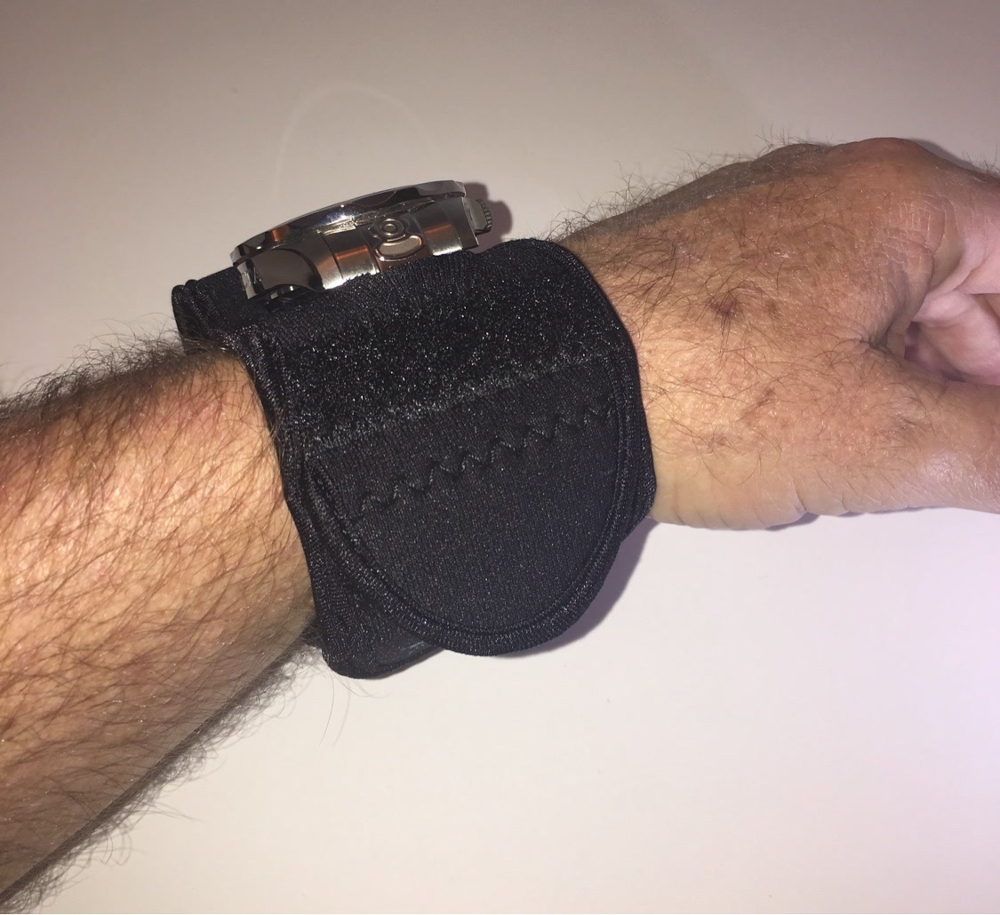

From the blog
Your Watch at Work: Shop, Yard, and Warehouse Shifts
October 27, 2026

Some jobs let you baby your watch. Shop work, yard work, and warehouse shifts do not. You move fast, you handle metal and concrete, and you work long hours in dust and sweat. A watch can still earn its place on your wrist through all of that, but only if it is guarded. Here is what work does to a bare watch, and the simple fix that keeps it safe.
1. Tools and benches hit harder than you think
Wrenches, hammers, clamps, and steel benches are all harder than a watch case. One swing of an arm, one reach across a bench, and you have a mark that stays. It does not take a big accident. It takes a normal work day, repeated for months. A neoprene sleeve puts a soft guard over the case and the face, so those everyday bumps stop leaving a record on your watch.
2. Dust and grit get into everything
Shop dust, sawdust, concrete dust, and yard dirt do not stay on the surface. They settle into small gaps and grind away at a finish every time you move your wrist. Over a season, that grit dulls a watch faster than one hard knock. A sleeve helps keep that dust off the watch itself, and it shakes clean at the end of the shift. Your watch stays cleaner because it was never left exposed.
3. Lifting and carrying put your wrist in the line of fire
Boxes, lumber, pipe, and pallets all pass right by your wrist. You grip, you lift, you set things down, and your watch brushes against edges and corners all shift long. Even careful workers cannot avoid every contact when the load is heavy and the pace is fast. A padded sleeve takes those brushes and bumps in stride, so you can focus on the load instead of guarding your wrist.
4. Sweat through a long shift adds up
Eight, ten, or twelve hours of work means hours of sweat under a watch band. Salt and moisture sit against the case and the band, and they wear on the finish over time. Add heat in summer and cold sweat in winter, and a watch takes a beating just from being worn. A sleeve helps shield the watch from that steady soak, and you can rinse the sleeve and let it dry overnight, ready for the next shift.
5. Make covering it part of clocking in
The best work habit is a simple one. When you clock in, slip the sleeve on and close the flap. When you clock out, take it off and check your watch. No extra gear to remember, no fuss in the middle of a job, and no need to leave a good watch at home. You still get the time, the timer, and the alerts you rely on, with a guard in place for the whole shift. Work hard. Let your watch do the same, safely.
A good watch is a tool, and tools should be used. Cover it at the start of the shift, work the full day without worrying about it, and bring it home looking like it did that morning. That is a work day done right.
Tired of babying your watch?
Medium $23 fits watches up to 48mm. Large $25 fits up to 53mm. Five colors.
Order Yours More Tips